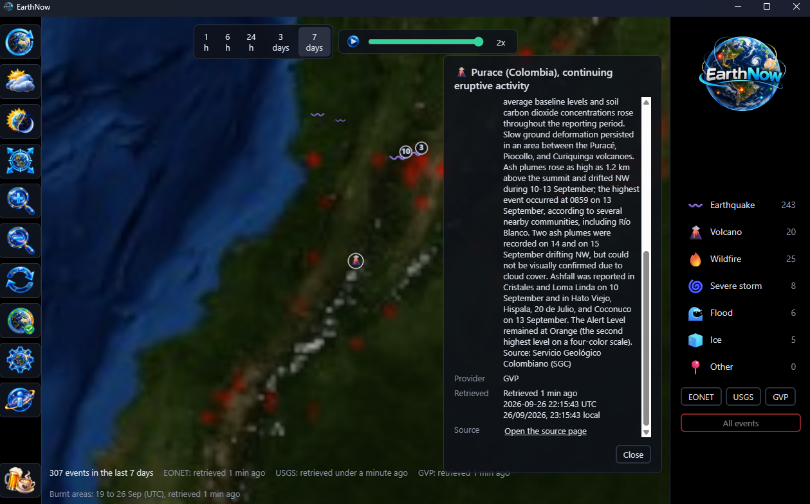

Straight from the source
Nothing made up. Nothing dressed up as live.
Every event names who reported it and how old that report is. EarthNow does not guess, predict or embellish; it shows what the people who measure the planet have published, then tells you plainly when it heard.

USGS
Earthquakes from the United States Geological Survey, checked every minute.
NASA EONET
Wildfires, storms, floods, ice and more from NASA's Earth Observatory Natural Event Tracker, checked every ten minutes.
Smithsonian
The volcanoes in the Weekly Volcanic Activity Report, from the Smithsonian's Global Volcanism Program with the USGS, checked every hour.
EUMETSAT
The clouds, from EUMETSAT's world cloud map: a new picture from the ring of weather satellites every three hours, fetched only while the clouds are showing.
GWIS
The burnt ground, from the Global Wildfire Information System of the Copernicus Emergency Management Service, mapped a day at a time and fetched only while the burnt areas are showing.
The globe is NASA's Blue Marble imagery, on this site as in the app; its night lights are NASA's Black Marble. None of NASA, the USGS, the Smithsonian, EUMETSAT or GWIS endorses EarthNow. It simply shows their public reports, credited.
Calm by design
It keeps quiet and keeps working.
What you can count on
- Offline? Still useful. It opens on the last events it received and tells you how old they are. An answer it cannot read never wipes them.
- One source down? The others carry on while it quietly tries again.
- Honest about age. A source that has gone quiet is marked stale rather than passed off as current.
- Private. No account, no sign-in, no telemetry. It
talks to the sources above over https and nobody else; if you
have named a proxy in the
HTTPS_PROXYenvironment variable, it goes through that.
What it is not
- A warning system. No alerts, no forecasts. For warnings, listen to your local authorities.
- An archive. A week is as far back as it looks or replays.
- A weather service. The clouds show where cloud lay; there is no rain, wind, temperature or forecast.
- A mapping tool. No measurements, no projections.